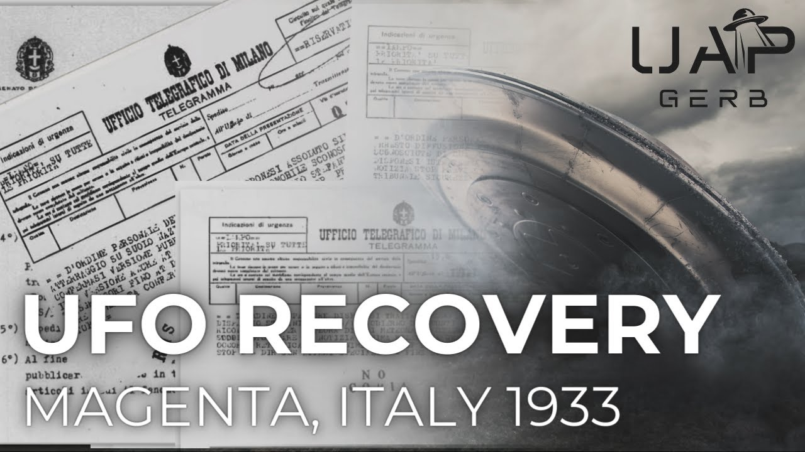

The 1933 Magenta, Italy UFO Crash

Published: 2024-03-18 · Duration: 25:22 · Channel: UAP Gerb
Description
A look into the Roswell before Roswell that was brought to the world's attention by David Grusch - the 1933 Magenta Italy UFO crash retrieval. This case has a tremendously fascinating story and rich lore dating back to the Fascist Regime of Benito Mussolini.
Italian UFO Researcher Roberto Pinotti came into possession of official fascist internal documents in the late 90s that spelled out the story of the Magenta UAP collection. These documents included telegrams, memorandums, and handwritten notes that tell of the sophisticated disinformation tactics utilized to keep the UFO retrieval secret as well as the establishment of a scientific coalition codenamed the RS/33. This secret group tasked with the scientific study of the crashed OR landed UFO is strangely reminiscent of the alleged MJ12 documents that would appear decades later.
In addition to the Telegrams and memorandums highlighting the RS/33 involvement with the case, handwritten notes and official documents are included on Italian UFO sightings between 1933 and 1940; specifically a case of a cigar-shaped UAP followed by two flying saucers. Interestingly, these notes address Galeazzo Ciano, Mussolini's son-in-law and suspected member of the RS/33.
The conspiracy here deepens with allegations Pope Pius XXII informed the US of the craft's existence as well as the hiding of the craft within Mussolini's famous bunker under Mount Soratte.
This video seeks to investigate the paper trail of the Magenta, Italy 1933 craft to investigate the full, and true story.
0:00 Intro 1:48 The Story 4:32 Telegrams 7:01 RS/33 10:29 Protocol Memorandum 13:20 Craft Storage 14:27 Italian UFO Reports 19:02 Stefani Disinformation 19:53 Vatican Connection 21:07 Lue Elizondo 23:04 Conclusion
Magenta, the Story: https://www.dailymail.co.uk/news/article-12252381/Italian-researcher-shares-evidence-files-secret-UFO-crash-Italy.html
Black Vault Coverage: https://www.theblackvault.com/casefiles/the-ufo-files-of-mussolini-fascist-ufo-files-by-roberto-pinotti/
Reddit Telegram Reuploads: https://www.reddit.com/r/UFOs/comments/15j8k3t/david_grusch_gave_us_a_hint_1933_italy_ufo_crash/ https://www.reddit.com/r/UFOs/comments/14desdy/whistleblower_david_grusch_and_the_italian_ufo/
Best Coverage of Magenta (Translate Required): https://www.silverland.info/documenti/gabinetto-rs-33/
Note Transcription: https://www.reddit.com/r/UFOs/comments/15kcwkt/1933_italy_ufo_crash_report_translated/
Agenzia Stefani: https://en.wikipedia.org/wiki/Agenzia_Stefani
Facist Document Comparisson: https://web.archive.org/web/20230806011212/https://www.icharta.com/media/catalog/product/cache/69a51cc83c75c6910294c3bc195e645e/c/-/c-216721-1.jpg
Lue Elizondo Discussion (1:14:22-1:26:10): - https://www.youtube.com/watch?v=uqtSWD6PYW8
Bunker Soratte: https://www.warhistoryonline.com/instant-articles/mussolinis-massive-bunker-built-wwii.html https://www.atlasobscura.com/places/bunker-soratte
Liberation Times "All UFO Disclosure Roads Lead to Rome": https://www.liberationtimes.com/home/disclosure-road-leads-to-rome
Galeazzo Ciano: https://en.wikipedia.org/wiki/Galeazzo_Ciano
Guglielmo Marconi: https://en.wikipedia.org/wiki/Guglielmo_Marconi
Old Italian Forum on RS/33 and Magenta Crash: https://web.archive.org/web/20070819053025/http://www.zonamagica.net/filesfascisti.htm
Sunday June 17 1933 Meteor: http://www.archiviolastampa.it/component/option,com_lastampa/task,search/mod,libera/action,viewer/Itemid,3/page,7/articleid,1143_01_1933_0144A_0007_24395130/anews,true/ https://www.reddit.com/r/UFOs/comments/15efnyu/investigation_into_the_1933_magenta_italy_ufo/
De Santi: https://www.abebooks.com/servlet/BookDetailsPL?bi=31280627315&cm_sp=snippet--srp1--tile8&searchurl=an%3DPETACCO%252C%2BARRIGO%26ds%3D10%26sortby%3D17
Ciano Dairies: https://archive.org/stream/GibsonHughTheCianoDiaries19391943TheCompleteUnabridgedDiariesOfCountGaleazzoCian/Gibson%2C+Hugh+-+The+Ciano+Diaries+1939-1943+The+Complete%2C+Unabridged+Diaries+of+Count+Galeazzo+Ciano%2C+Italian+Minister+of+Foreign+Affairs%2C+1936-1943_djvu.txt
Tomasso David: https://inpartibusinfidelium.wordpress.com/2011/09/02/tommaso-david-da-fascista-a-neofascista/
Paolo Guizzardi Translations: https://www.youtube.com/watch?v=32UFw_6EiME&t=817s
Chiles-Whitted Encounter: https://en.wikipedia.org/wiki/Chiles-Whitted_UFO_encounter
Music by the always talented: https://www.youtube.com/channel/UCz71_7z7NphLPZ0l_7G3Llg
ufo #uap #uapnukes #uapdisclosure #ufology #ufonews #ufosightings #uapsightings #ufofootage #uapfootage #hynek #condoncomittee #Jallenhynek #projectsign #projectgrudge #projectbluebook #bluebook #ufocongress #SOL #solfoundation #karlnell #Battelle #UFOreverseengineering #lockheed #skunkworks #lockheedmartin #rosscoulthart #fastwalker #blackvault #slowwalker #kingman #ufocrash #nickredfern #Grusch #Magenta
Transcript
Show transcript
So let's start from the very beginning. You say it's a 90 year cover-up. Just about, yeah. 90 years? 1933 was the first recovery in Europe, in Magenta, Italy. They recovered a partially intact vehicle. It's true, it's real. Yeah, that actually happened. Italian government moved it to a secure air base in Italy for the rest of kind of the fascist regime until 1944-1945, and the Pope Pius XII back-channeled that. So the Vatican was involved. Yeah, and told the Americans what the Italians had, and we ended up scooping it. So let me be very clear about this. You're saying that the Catholic Church, the Vatican, they know about the existence of non-human intelligence on this planet. Certainly. It didn't start or end with Roswell. The first traceable recovery of a UFO occurred 14 years before the infamous cover-up in the desert sands of Nevada. In fact, in direct statements made by both David Grush and Lui Elizondo, the first NHI craft to be forcibly taken by U.S. forces would arise from the smoldering remains of the Italian fascist state, led by none other than bonito Mussolini during the Second World War. Hey guys, it's UAP Gerb, and today we are going to discuss the now infamous 1933 Magenta, Italy UFO crash retrieval. This tale is both intriguing and perplexing, featuring a rich document trail and fascinating historical connections to the regime of Mussolini and the Vatican. Why did Grush specifically reference this case to Ross Colthart in his News Nation article? Buckle up guys, because today we are going to dive right into the Magenta UFO retrieval. Before we do any sort of investigation, let's discuss the story, and guys, please forgive any butchering of Italian words or names that I use. In June of 1933, 14 years before the Roswell crash, an unknown craft crashed or landed at Magenta, just west of Milan, Italy. The craft was reported to be bell-like, almost resembling a mix between a flying saucer and the Glock, the legendary mythical alleged Nazi wonder weapon. The craft sat at a reported 10 meters in diameter. Dictator bonito Mussolini thought this was an unconventional flying vehicle that originated from France, Britain, or Germany, but the Italian government established a top-secret group, the Gaminetto Ricciare specialise 33, or how I'll refer to it from now on so you don't make me say that again, the RS33 to examine the craft. This top-secret group was actually headed by Prime Minister Benito Mussolini, and Foreign Minister Gallezo Siano, Air Marshal Italo Balbo, with scientific support from astronomer Gino Saccini and possibly senator and founder of the radio, Guglielmo Marconi. Marconi himself initially resisted Mussolini's terrestrial claims, believing the craft to be extraterrestrial in origin. The craft and its debris was reportedly stored in the hangars of the SIAI Marchetti Aircraft Company in Virgiate Varese. Journalists were ordered to keep silent about the incident due to national security, citing strict dissemination of information by the Agenzi Stefani, Italy's state propaganda papers. The UFO remained in the possession of Mussolini's regime until the fall of the Axis powers and was recovered by US agents of the Office of Strategic Services in 1944 or 1945, and this was the former US intelligence agency. The magenta case was brought to light by Italian UFO researcher Roberto Pinotti, who in 1996 received original Italian secret documents from the fascist regime, containing both protocol on how to handle the craft discovery, as well as internal Italian government notes on UFO sightings from 1933 to 1940. The document consisted of both telegrams and handwritten notes. The sender chose to remain anonymous to Pinotti, going only by Mr. X, the did claim to have inherited them from a family member who worked on Mussolini's supposed UFO program. Roberto received a series of three internal Italian government telegrams relating to the craft. Let's review each one. In our first telegram, we see the telegram is sent by the director of special affairs of the Stefani news agency, the only agency of the Mussolini regime, as an official telegram of Milan. The priority of the telegram is labeled lampo, or highest, with a reservatissimo, a confidential rating. The telegram reads, quote, by order of the duce, the leader, absolute silence is ordered of the presumed landing of an unknown aircraft on national soil. The version is to be published with today's dispatch is confirmed. The same version also applies to personnel and journalists. Maximum penalties for offenders up to and including appeal to the state security court. Please confirm receipt immediately. Our second telegram was set on the 13th of June 1933 at 4 p.m. again from the Stefani news agency, with lampo priority and reservatissimo classification. This document reads, quote, by superior order, the news disclosed today in the Stefani dispatch number 63 slash 3 slash 1 dot 0 should be treated as follows. The above mentioned aircraft has been recognized as a meteor by the Barrera Astronomical Observatory. Given the news, the slightest graphic relevance, there is no need to rectify, minimize. And finally, our third telegram was sent the same day, the 13th of June 1933 with the same priority classification and sender this time at 507 p.m. This telegram reads, quote, by order of the leader, it is ordered that circulation of the news about the craft of unknown nature referred to in today's Stefani dispatch at 7 30 a.m. be stopped immediately. It is ordered that any leads for newspapers carrying this news be recast immediately. Maximum penalties for offenders up to and including appeal to the state security court, please confirm receipt immediately. So with these three telegrams, we see the Italian press demand absolute silence over a landing of an unknown craft. Immediate arrest and maximum penalties were to be issued to any journalist commenting on the craft. From the telegrams, we can see the Italian propaganda initially pushed for journalists to treat the landing of the craft as an identified meteor. Only to swiftly cease any and all reporting by Italian journalists. Does this not sound awfully similar to the Roswell incident? Quick media control to drown out the presence of a crashed UFO? If you look at the second and third telegrams I've shown you, you will notice an r slash s stamp in the telegram text field. Unfortunately, I can't find any sharp enough images to decipher what exactly the text on this field reads. However, remember in the description of the alleged magenta craft? A top secret scientific coalition was formed to investigate the craft named the gabinetto richerce speciale 33 or the RS 33. In other words, the special group of 1933. Well, within the document sent to Pinotti, we see an introduction directly mentioning the RS 33 as a prelude to two sheets describing protocol for the crash. Atop the letter in two pages lies the stamp of the Kingdom Senate. This intro to this protocol memorandum has been translated by Paulo Guisardi and reads, quote, Dear DeSanti, I am sending you as requested and agreed verbally the note for your rule. Do not make copies. Do not even mention it to your deputy. For any matter having to do with the RS 33 office, come to me first. I personally wrote these lines as to not expose them to the eyes of my secretaries, therefore adjust accordingly. So who is this DeSanti and who are the figures I mentioned earlier as connected with the RS 33? DeSanti, the man to which the craft recovery protocol was addressed, was almost assuredly a pseudonym for one Tommaso David, a colonel of the Frossinone founder of the Volpi Argentante spy group and later head of the Salo Secret Service, as discovered by Italian historian Arrigo Petaccio. Earlier, I mentioned the possible connection of Guglielmo Marconi to the RS 33, the Nobel Prize winning inventor of the radio. Marconi was an outspoken advocate for belief in extraterrestrials, pursuing the possibility of contacting them via radio, as outlined in a rare article published in 1937 titled, Guglielmo Marconi, Magician of the Invisible Ruler of Spaces by La Stella Mario, which itself referenced earlier claims by Marconi in 1920 and 1932. At this time in 1933, the strict propaganda machine of the Stefani as mentioned earlier would cover everything under the regime bar the highest authorities, Benito Mussolini, Foreign Minister Ciano, and Air Marshal Balbo. Due to this, it stands to reason the two men besides the Duce would be read into the top secret RS 33. Ciano's likely involvement in RS 33 and direct naming in the fascist UFO sightings post-magenta will become apparent later in the video. It is worth mentioning the famous Ciano diaries that describe Ciano's experience and involvement within fascist Italy up to his execution in 1943, makes no mention of this secret group. However, it is understandable given the top secrecy of this commission. What is interesting, however, is a deep rabbit hole between Eta Ciano, Ciano's wife and Mussolini's daughter, Alan W. Doles, the Ciano diaries and Operation Sunrise. As a front to retrieve the magenta UFO from the crumbling fascist state, this is not my research, so I will not pass it off as my own. However, if you guys are interested, I will see if I can do an interview with the really sharp cat who has spent countless hours digging into the craft retrieval process by the United States. Now onto the mentioned memorandum describing craft recovery to DeSanti in conjunction with the RS 33. We see these labeled personal note, very confidential, so let's go through all nine steps of protocol surrounding the magenta retrieval. One, notify the mayor. Two, order the immediate recovery of the aircraft. Three, order immediate arrest of all witnesses. Appoint Special Section RS 33 of the OVRA, the Italian Gestapo, present in each provincial capital. Four, direct all reports with the utmost secrecy and precedence over all priorities to the Central Meteorological Office at La Sapienza University in Rome, exclusive relevance RS 33 office. Five, to prevent ex-officio the dissemination of any news particularly in the press. Six, for the purpose of the previous point, it is necessary to publish from time to time very short articles in which the phenomenon is reported to its authentic and unique celestial nature. Meteor, shooting star, planet, luminous halo, iris, etc., according to form RS 33.fz.4 previously transmitted to all the prefectures of the kingdom by special dispatch. Seven, transmission of reports to the Air Force is subject to the prior favorable opinion of the RS 33 office, whose decisions are unappealable up to the highest hierarchy of the duce. Eight, strict exclusion of any other scientific body from the collection and examination of the reports available, including the Pontifical University. And nine, charge all expenses related to this provision to CAP 32 title XXII heading 32-2 of the order to the R-Academia di Italia, written authorization from Chief of Staff RS 33. And a couple thoughts here guys, points eight and nine sound like protocol almost identical to USAF regulation 200-2 from 1953, which I talk about all the time in which UFO sightings were delegated strictly to the Air Force or higher authorities while restricting cases to be shared with scientific bodies of Project Blue Book. And all of this operating protocol sounds extremely similar to the alleged MJ 12 or Majestic 12. If you don't know what that is, it is basically the alleged crash retrieval and reverse engineering group that operates with complete autonomy to investigate NHI within the USG. This is a really rough summary as maybe I need to cover the MJ 12 docs, but the RS 33 sounds like an Italian precursor to the US body that would arise in the late 40s slash early 50s. So, unlike the Stefani telegrams and memorandums, I have no verifiable evidence here for craft storage. But according to the anonymous sender Mr. X, the remains of the craft were stored in the shed of the SIA Marchetti Aeronautical Manufacturing Company. The trail here is incredibly confusing, as sometime during the 1943 year, it is proposed the Nazis took control of the UFO and dissolved the RS 33. A possible link here is that a fire occurred in the SIA warehouse in Virgiat on the 17th of March 1943. The craft likely was then moved to Mussolini's enormous bunker under Mount Serrate, 27 miles north of Rome. At the time of its construction in 1937, the bunker was the largest in Europe, three miles long and 300 feet underground. Rumors circulated the bunker was used to house military equipment, possibly a recovered NHI craft. On the 8th of September 1943, the Germans executed Operation Auxay, disarming all Italian units and commandeering the bunker for the Wehrmacht command for southern Europe. More research needs to be done here to try to find a hard paper trail for the craft, but this is what we're working with for now. An additional piece to this already complex puzzle was included by Mr. X to Pinotti. These included a series of handwritten notes additionally bearing the seal of the Kingdom Senate, describing a UFO encounter titled Mestre. With these is a 1936 Stefani telegram about Mestre stating quote, Absolute secrecy is required about unidentified aircraft mentioned in the 23-47 Confidential Report. A letter will follow. Okay, and on to our letter. We see a curious drawing of a cigar shaped UFO with what appears to be an exhaust tail, not too dissimilar to a rocket engine, followed by two saucers with domes like ping pong balls on top. I'm immediately reminded of the flying saucer as described by Lieutenant Jacobs and the 1948 Chili's Witted Encounter. In this UFO encounter, two American commercial pilots reported their aircraft nearly collided with the UFO over Montgomery, Alabama. The UFO quote looked like a wingless aircraft. It seemed to have two rows of windows through which glowed a very bright light, as brilliant as a magnesium flare, comically guys Blue Book described this case as a meteor. Anywho, the text on this scribbled handwritten note was thankfully transcribed by the black vault. This reads quote, It was observed in the morning. It was a metallic disc polished and reflecting light with a length of 10 or 12 meters. Two fighter aircraft from a nearby Air Force Base took off, but were not able to reach it even traveling at 130 kilometers per hour. It did not admit any sound, which would lead one to consider an aerostat, a balloon, but nobody knows of balloons that can fly faster than the wind. I know for sure that it was seen by other pilots. The report arrived in the hands of Allegible. Then, after approximately an hour and a half of flying over Mestre, it was seen as a sort of metallic tube, gray or slate in color. A drawing by a confidential informant was redrawn by Andre, who, as far as the two A and B drawings are concerned, explained that A was described as being like a kind of aerial torpedo with very clear windows and with alternating white and red lights. B were two hats, two hats like those used by priests. They were wide, round with a dome in the center, metallic and followed the torpedo without changing their relative positions. The prefecture has opened an inquiry, but you can imagine that it will make little inroads and have a similar outcome to that of the 1931 case. The Duce has expressed his worries, because he says that if it were an English or French aircraft, his foreign policy would have to start all over again. And Italy wasn't just monitoring its own skies at this time. Here we can see from the archives of the prefecture in Milan, copies of telegrams from the prefects of the Kingdom of Italy to the government between 1933 and 1938, mentioning reports of, quote, unconventional flying vehicles, and show the official attention of the Italian authorities to the problem. This telegram, signed by prefect Mutinelli, mentions the presence of unknown flying vehicles over Valona in Albania, a country under Italian control. Of course, every single thing I talked about would be void if the documents were fake, right? Well, fortunately, Pinotti took a skeptical approach when he was first contacted by Mr. X. He had the documents tested by a forensic expert who said the paper and ink was from the period of the 1930s. Additionally, scientific consultant Antonio Garavaglia shared with Daily Mail, quote, it can be stated with reasonable certainty that this sample examined in the subject of the appraisal can be considered original and therefore authentic. Additionally, Italian Reddit user Lowlab5185 was able to lend his hand to the legitimacy of these documents, by not only commenting on the writing style matching the futurism era of fascist communication style but also provided two examples of official telegram templates used by Italian authorities in the 1930s. See the resemblance here. Remember how in both the telegrams and the RS-33 protocol mentioned was made of labeling the craft's landing a meteor or other meteorological phenomena as directed by the Agenzia Stefani? Well, check this out. We can actually find direct reporting of this disinformation. From our telegrams and testimony, we can conclude the crash or landing occurred on the 13th of June 1933. From later that same month, we can find newspapers and magazines that report on inclement weather occurring in the Magenta area, severe lightning storms and hail storms that illuminated the night sky, such as this paper from the 22nd of June, which reported the week prior a lightning strike that illuminated the night sky and struck five bricklayers on the Tricetta Magenta Road, now on screen as a magazine illustration depicting the event. I unfortunately don't have much to go on for the Magenta case connection to the Vatican and Pope Pius XII. We will have to go off the word of David Grush and reporting done by Christopher Sharp predating Grush in his 2021 article All UFO disclosure roads lead to Rome. Sharp writes about how initial relationships between Mussolini and the Catholic priesthood were quite good and how the Duce confided with Pope Pius XII about the retrieved unknown craft. The Pope allegedly became uneasy about the craft being in an Italian possession, as Italy allied with the Nazis, thus leaking information to the US about the craft. Due to the Pope's information, the facility which housed the craft was spared from Allied bombing. This curiously does in fact line up with the bunker serrate we spoke about earlier. After the war or the end of 1944, the craft was brought to the US. Of course, this is all based on reporting and I do not have a paper trail, but Christopher Sharp is a well-respected journalist within the UAP realm. As we stand, we can prove the authenticity of the documents but not yet these anecdotal accounts. And lastly, my friends, as we opened with a powerful statement by David Grush, I would like to leave you with an additionally powerful statement by Lou Elizondo. Kind of gave a few hints before, but Roswell may not have been the first event and well known. I mean, there's been some reporting internationally as well that there have been some crashed vehicles and they were obtained by local authorities and there was some scientific study done on them. I want to be very careful not to go too far down the rabbit hole, but I've seen personally some documentation that's very compelling from a particular foreign country where they had a recovery of a vehicle and they had some countries conducting scientific analysis on it. And after World War II, allegedly, parts of that vehicle were brought to the United States. Yeah, I think I know what country that was. It was in the South American country, I think. Maybe Brazil, you know. Damn it, Argentina? I'm not sure. Well, it was Italy. Yeah, that's as it was explained to me, I saw some documentation. Look, you know, I don't want to get too much into, you know, conspiracy side of the house. There is some documentation that has been validated. That was that was from Mussolini himself. And it's, you know, it's authentic. It's been proven to be authentic the documentation. So certainly interesting. Hey, guys, thank you so much for joining me today as we took this dive into the 1933 Magenta, Italy case. Sorry for the little bit of time away. I had some family in town for their spring break, but now that that's done, we're back in action. Personally, I find this case scintillating. It's the Roswell before Roswell. There's a rich paper trail here as shown by Pinotti. So this is the kind of case I love where we have documents we can dive into. We can cross reference. We can see what's going on with legitimate documentation. So I remember when Grush first went public with his News Nation interview and he referenced this case. I was gobsmacked, as Ross Colthart would like to say. And immediately I dove into learning more and as much as I could about the Magenta case. I find this case particularly compelling, especially the idea that Benito Mussolini, who wasn't the sharpest tool in the shed, thought this was a craft of British or German or French origin. And I find the description of the clock particularly interesting, this kind of bell shaped saucer type UFO. I know there were some details added later on by one, I think William Brophy or William Brophy's grandson, who claimed that there were bodies uncovered, as we can see in the original documentation. We find no evidence of bodies, so of course I don't want to include those when I don't have any sort of hard evidence. I'm not sure about his claims. I think this man was involved in some other hoaxes, but I purposefully did not include that in today's video. And if you guys are interested, I will talk to the gentleman who has done countless hours of work into finding the connection process as to how the US retrieved the craft. I did not cover this because I could not talk about this without basically copying his work. That would undermine my credibility and undermine the dozens, if not hundreds of hours he has put into pouring through documents. So that's just not how I roll, I respect the man completely, but I would love to cover that if I can get him on the show. As always guys, please remember to like and subscribe. This has been a particularly active week in UFOs with the Arrow Report and the D.D. Johnson FOIA request. So we have a lot to cover coming up guys. Hope you enjoyed this video and I will catch everybody next time. Thank you.
Entities
People (38)
- Air Marshal Balbo
- Alan W. Doles
- Andre
- Antonio Garavaglia
- Anywho
- Arrigo Petaccio
- Benito Mussolini
- Christopher Sharp
- Ciano
- David Grush
- DeSanti
- Duce
- Gallezo Siano
- Gino Saccini
- Grush
- Guglielmo Marconi
- La Stella Mario
- Lieutenant Jacobs
- Lou Elizondo
- Meteor
- Mussolini
- Mutinelli
- Paulo Guisardi
- Pius XII
- Roberto
- Roberto Pinotti
- Ross Colthart
- Roswell
- Tommaso David
- UAP Gerb
- William Brophy
- William Brophy's
- X
- X.
- bonito Mussolini
- iris
- magenta craft
- reservatissimo classification
Places (25)
- Alabama
- Albania
- Argentina
- Brazil
- Britain
- Europe
- France
- Gaminetto Ricciare
- Germany
- Italy
- Magenta
- Mestre
- Milan
- Montgomery
- Nevada
- Rome
- U.S.
- US
- Valona
- Vatican
- Virgiat
- Virgiate
- magenta
- the Kingdom of Italy
- the United States
Organizations (36)
- Air Force Base
- Allied
- Blue Book
- Ciano
- D.D. Johnson FOIA
- Daily Mail
- Dear DeSanti
- Duce
- Eta Ciano
- La Sapienza University
- NHI
- News Nation
- Operation Auxay
- Operation Sunrise
- Pinotti
- Pope Pius XII
- Project Blue Book
- SIA
- Sharp
- UAP
- USG
- Volpi Argentante
- Wehrmacht
- XXII
- the Air Force
- the Arrow Report
- the Barrera Astronomical Observatory
- the Catholic Church
- the Central Meteorological Office
- the Invisible Ruler of Spaces
- the Kingdom Senate
- the Office of Strategic Services
- the Pontifical University
- the R-Academia di Italia
- the Salo Secret Service
- the Tricetta Magenta Road